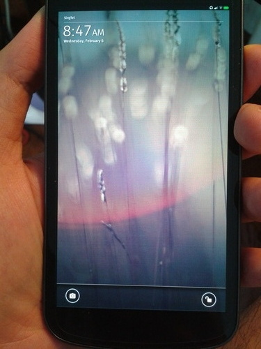
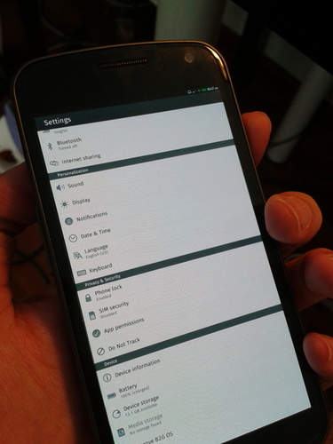
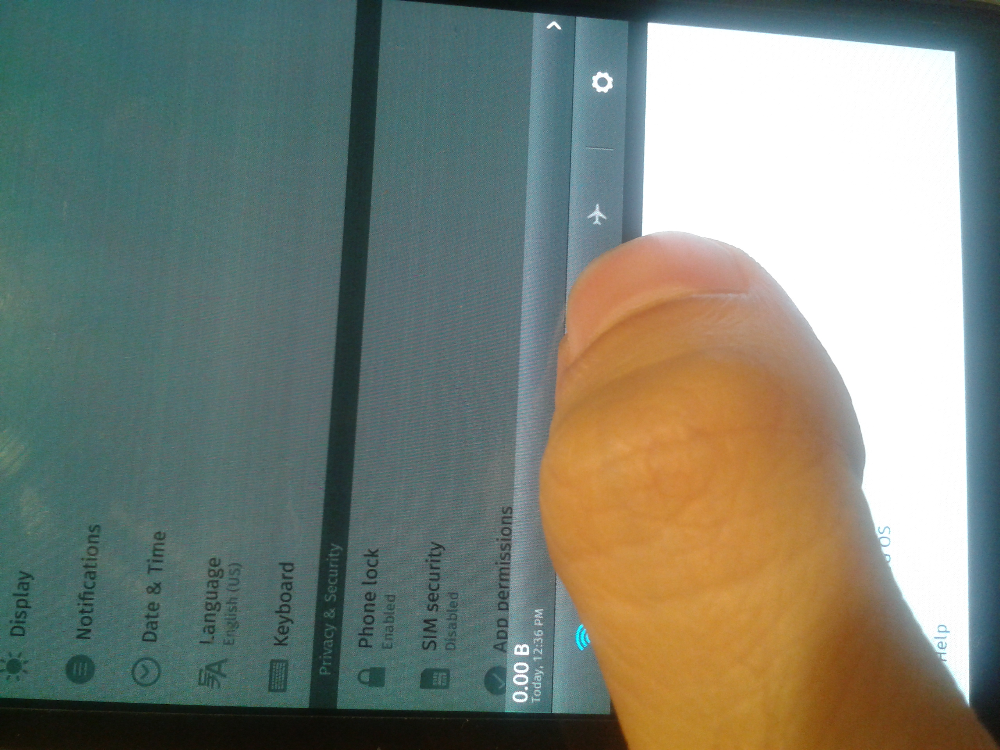
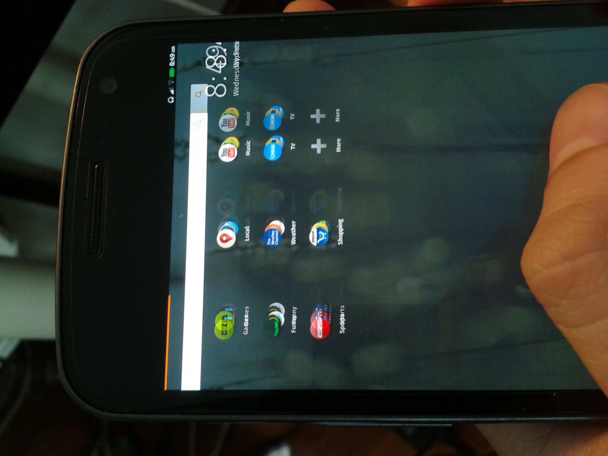
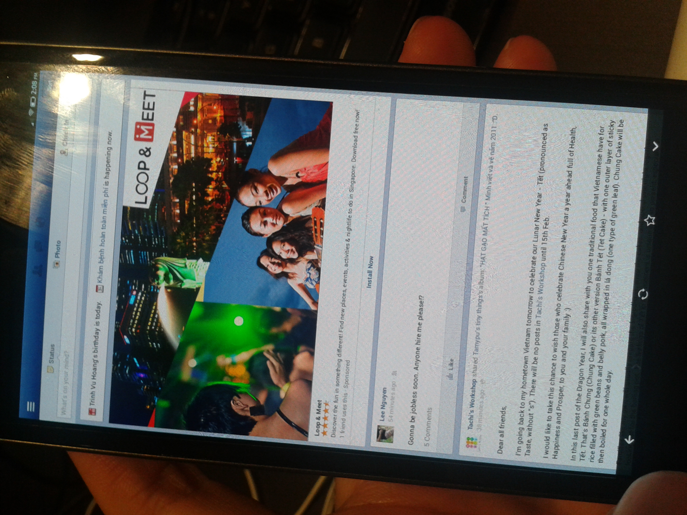

Firefox OS on Galaxy Nexus - Review
Mon 04 February 2013Smartphone landscape has never been this hot, with RIM introduces their new OS platform, Blackberry 10 OS. The Software have been a critical wining factor in the phone war. It appeals to users in two ways: providing the best user experience or creating a strong ecosystem. The later can be acchieved by being attractive to application developers. The two late commer, Ubuntu and Firefox are doing just that. The new Ubuntu for Phone is recently released. It emphasises on the large community already supporting Ubuntu platform. Firefox OS, which is under heavy development, portraits itself as the platform of Open Web Applications. It enables developers to write platform-independent applications in HTML5, CSS and Javascript.
While other smartphone OSes might also support the deployment of web apps, Firefox OS caught my interest by its different proposition: Web apps will be the first-class citizen. Device-level functions like phone call or sms which are usually served by native apps could be built into web apps with the Web Runtime API.
I have tried buiding and flashing Firefox OS into my Galaxy Nexus phone. Here are the screenshots:

Lock Screen

Standard setting screen with Do not track option

Notification Bar as in Android

From home screen, you swipe left or right to access app icons or market places
Apps are pre-grouped into different categories like social, news... As you can see, the graphic doesn't scale very well to match the screen size.

News Group
Contact view

Market Place

Inside an app
The overall experience is that it is still buggy and slow. My experience is short-live as there is a bug in which Firefox OS doesn't support soft buttons for phone without hardware button. So I have no way to go back to home screen other than restart the phone. If you up to the challenge and believe in the future of Firefox OS, you should try fixing this bug.